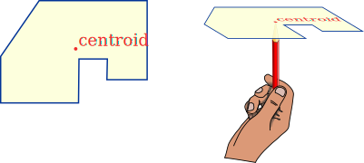
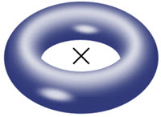
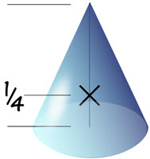
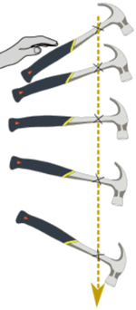
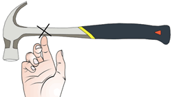

Centroid
And Center of Gravity
The Centroid is the average position of all the points of an object.

When we cut a plane shape from a piece of card it balances perfectly on its centroid.
The geographic center of the USA was found this way (near Lebanon, Kansas) in 1918.
Center of Gravity
The Center of Gravity is the same as the centroid when the density is the same throughout.
Center of gravity, center of mass and centroid are all the same for simple solids.
They are often marked by a cross or dot and sometimes the letters CG or just G

For a torus the centroid is at the very center
(even though there is no part of the torus there!)

For a right solid cone the centroid is on
the center line and ¼ of the way from the base
The center of gravity of a car can be very hard to figure out, as there is lots of empty space and materials of different density (such as the engine vs the seats).
When doing calculations we can often replace an object with its center of gravity.

Example: You drop a hammer!
It may spin a little, but its center of gravity will fall straight down.
It also drops faster and faster due to gravity.
(The only complication is air resistance, which affect its motion more as it goes faster.)
A force that goes through the center of gravity won't cause any rotation. In fact you can balance an object by supporting it directly below its center of gravity.

Centroid of a Triangle
Where the medians intersect is the centroid. A median is a line segment from a corner to the midpoint of the opposite side.
Try moving points A, B or C: